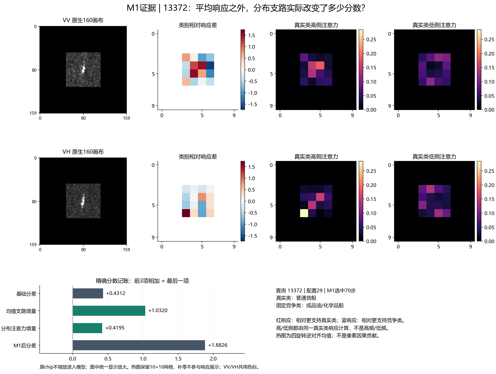
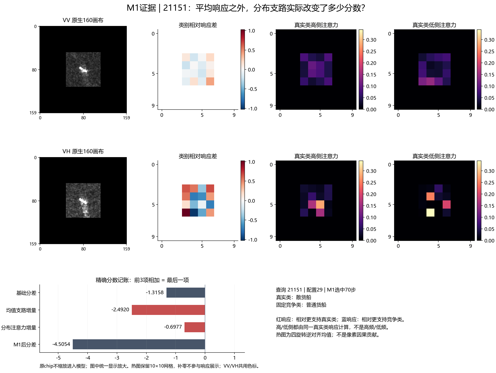
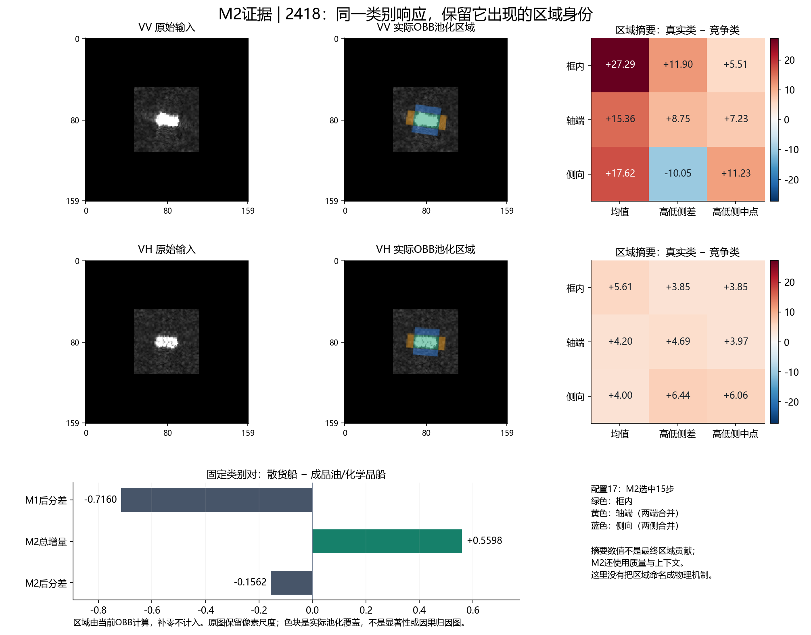
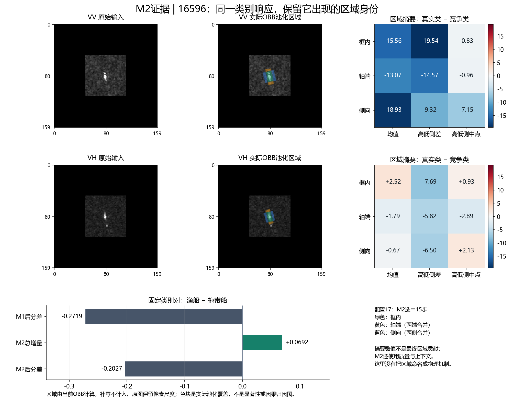
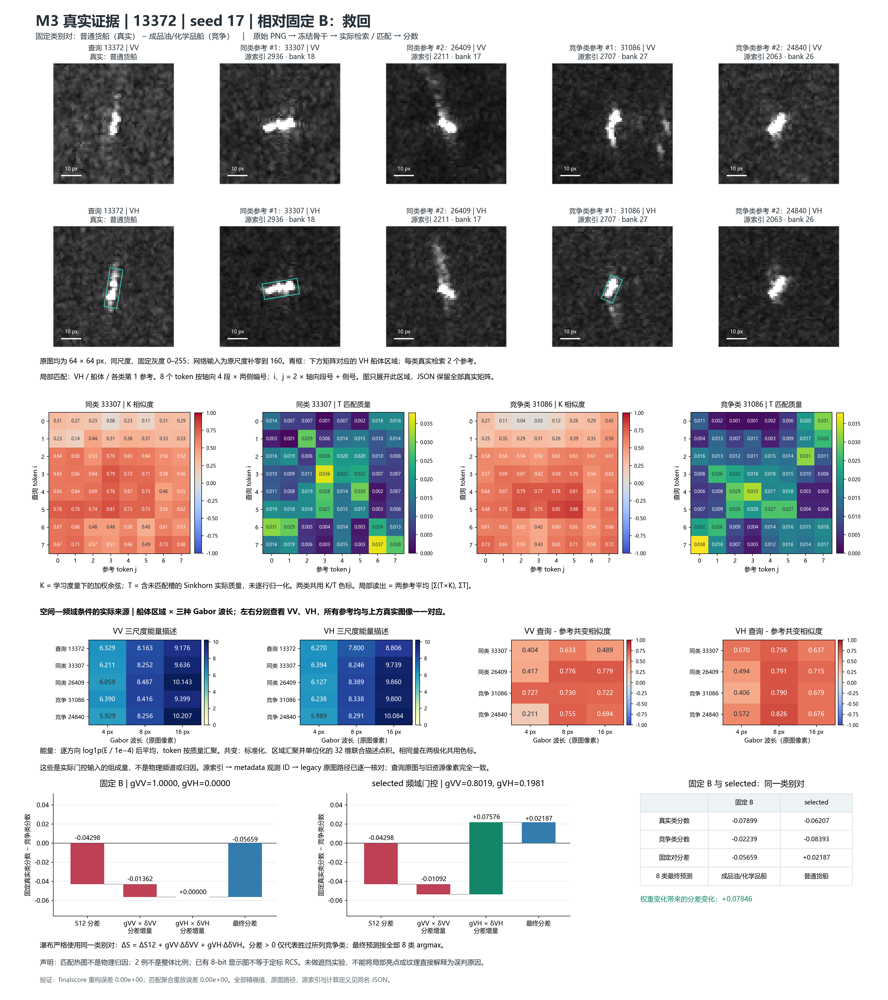
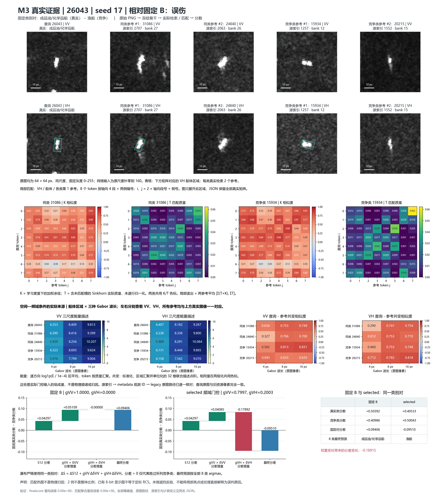

先看这几条实际变化
| 案例与配置 | 检查的作用 | 真实类 − 固定竞争类分差 | 可以说明什么 |
|---|
| M1 · 13372 · 29 | 均值与分布支路 | +0.4312 → +1.8826 | 分布支路贡献+0.4195，强化正确判断 |
| M1 · 21151 · 29 | 相同结构的反例 | −1.3158 → −4.5054 | 均值和分布都进一步偏向错误类别 |
| M2 · 2418 · 17 | 区域证据补充 | −0.7160 → −0.1562 | 明显改善分差，但M2后仍未判对 |
| M3 · 13372 · 17 | 固定B → 条件调权 | 约−0.0566 → +0.0219 | 引入有益VH，救回 |
| M3 · 26043 · 17 | 相同调权的反例 | 约+0.0941 → −0.0951 | 引入有害VH，误伤 |
同一案例的不同配置不是同一次决策；这些是事后选择的解释案例，不是总体收益比例。分差来自当前重新计算，和历史缓存可能有约10⁻⁴的浮点差异。
M1：不仅知道看哪里，也知道支路改了多少分
左侧是实际VV/VH输入；中间是候选类别的相对响应差；右侧分别是同一真实类别的高侧、低侧注意力。下方将均值与分布支路的类别增量分开记账。

这例原本已判对。均值增加约1.0320，分布支路再增加约0.4195；不能把强化正确判断说成“救回错误”。

反例：两条支路都偏向普通货船，导致真实散货船的分差进一步降低。注意力图本身并不保证关注正确。
热图保留10×10特征网格，只展示有效区域；四旋转分别计算后逆对齐汇总。颜色是响应或注意力，不是精确的像素级因果贡献。
M2：同样的类别响应，来自哪个区域？
绿色为框内，黄色为轴端，蓝色为侧向。右侧是各区域分别读出的均值与分布摘要，VV/VH不预先混合。下方显示当前M2的实际总增量。

VV侧向的“高低侧差”与框内方向不同，而VH三个区域方向又不同。区域分开保留了这种差异；最终M2增加约0.5598的分差，但尚不足以越过分类边界。

这例船体较小。VV区域摘要整体偏向拖带船，VH读出不同；完整M2只带来约0.0692的改善，仍然错误。不能直接将某个摘要的正负当作该区域的最终贡献。
区域为OBB定义的读出范围，不是精确物理分割。区域摘要到输出还有非线性头与质量、上下文输入，本图不虚构逐区域加性贡献。
M3：与谁比较、如何对应、为什么改变类别判断？
下面并列真实查询与模型实际选到的同类、混淆类源参考；匹配矩阵来自本次前向计算。末端分差图可精确核对S12、VV补充与VH补充如何组成最终判断。

固定B在配置17只用VV；加入约0.198的VH补充后救回。匹配和分数贡献可追踪；这不意味着动态频域是唯一能救回它的方法。

反例：同样加入约0.200的VH，但此处VH补充指向错误类别，最终误伤。这是条件调权未稳定判断证据效用的具体边界。
K是内容比较相似度，T是匹配质量分配，不是船型正确概率，也不是物理归因。模型看到源参考类别，不读取查询真实类别；真标签仅用于事后选定解释对象。